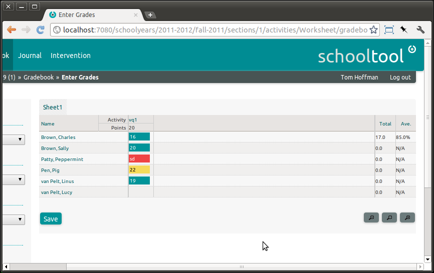

SchoolTool’s Gradebooks¶
There are three components that encompass assessment in SchoolTool:
Gradebook, which is used for scoring activities and assignments based on point values. The Gradebook is also used to report enter grades and comments for report cards.
Journal, which can be used to assign a score to a class meeting, for example, a participation grade for the day.
CanDo, which is our skill (competency, outcome, etc.) based assessment system. That is, each student’s progress is tracked toward achievement of a specific set of skills.
Getting Started with Gradebook¶
SchoolTool’s Gradebook allows teachers to track point scores for assigned Activities. That is, the teacher creates an Activity, assigns a numeric point range for the Activity, and then assigns each student a score for that Activity. Activities can also be assigned to categories, which can be weighted for the purpose of calculating an overall average. “Score systems” or grading scales allow percentage scores to be associated with other types of grades, such as A-F, Pass/Fail, etc.
Getting to the Gradebook¶
Instructors or students of a section will see a Gradebook tab at the top of every page. Clicking this will take the instructor or student to their Gradebook. Administrators and other users who do not participate directly in sections have no Gradebook specific view (they can view grades via reports accessed via the School tab) so they have no Gradebook tab.
Note that if you do not wish to use the Gradebook, Journal or CanDo, you can hide their tabs to reduce confusion (see Server Settings).
Creating an Activity¶
Log In as the instructor of a section. If you’re following these tutorials in order, you may log in as the teacher acting as instructor for the Section you made in Creating Sections.
Click on Gradebook at the top of the page:
The Gradebook is organized by term and section, each of which may contain multiple worksheets (much like the worksheets in a spreadsheet application). In the working example, we’ve only got one section, but the Term and Section menus in the left sidebar allow the teacher to navigate between sections.
By default, each section has a single worksheet, named Sheet1.
Let’s add an Activity. Click Add: Activity in the sidebar:
The main content area has three tabs, Activity, Linked Column, which allows you to embed columns from other worksheets, and External Score, which can import scores from other SchoolTool components, or potentially from external sources.
The fields should be self-explanatory, with the exception of Category, which will be explained shortly. The example is a 20-point vocabulary quiz. Note that scores exceeding the “maximum” value are permissible, and will be calculated as extra credit.
Click Submit. The worksheet with our new activity:
Scoring an Activity¶
Fill in scores by clicking on the relevant cells and entering numbers. Unsaved scores within the proper range show up as green, invalid scores are red, and scores above the maximum (extra credit) show as yellow.

Scores are not saved until you click **Save*.
If you accidentally try to navigate away from a worksheet with unsaved changes you should be prompted to save them.
Once the worksheet is saved, the cells return to grey, and averages and totals are calculated:
Sorting by Column¶
To sort by column, click on the abbreviated activity title in the column header to bring up the contextual menu and select Sort. Selecting Sort repeatedly toggles between descending and ascending sort order.
Activity Categories¶
Activity categories define different types of activities or assignments used in a school. Their main use is in weighting grade calculations. For example, a teacher may want exams to count for 60% of a student’s grade, with quizzes and class participation counting for 20% each. Every activity is assigned a category, but if you don’t need to use this feature, you may simply leave everything in the default “Assignment” category.
Activity categories are configurable by the site manager at the school level. Currently, individual teachers cannot create or delete activity categories.
To add or remove activity categories, as “manager” go to School and click Customize: Activity Categories in the sidebar:
To delete a category, click on the red minus (-) in the row next to it.
To add a category, select Add: New Category in the sidebar, enter the name of the category next to New Category, and click on Add:
To change the default category for all activities, click the yellow pencil icon next to the category you’d like to make default, then click the Make Default button. You can also change the title of the category from this screen.
The teacher can now select Edit from the activity’s contextual menu in the gradebook and switch our existing activity to the new Quiz category: